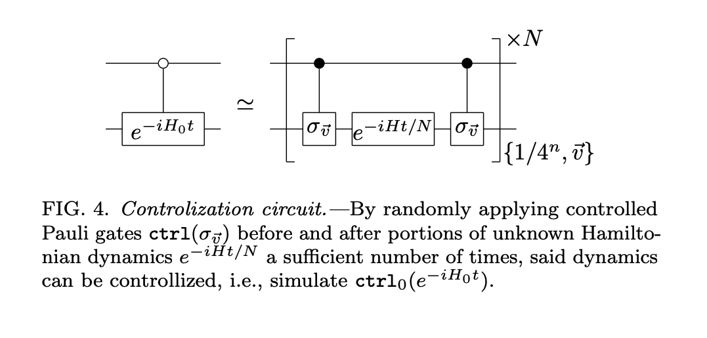

01 / 06
Quantum
Algorithmics
We design algorithms that harness quantum superposition, interference, and entanglement to solve computational problems beyond the reach of any classical method. Our work spans query complexity, quantum walks, algebraic techniques, and novel paradigms for search, simulation, and sampling — with a focus on proving tight upper and lower bounds on quantum query and time complexity.